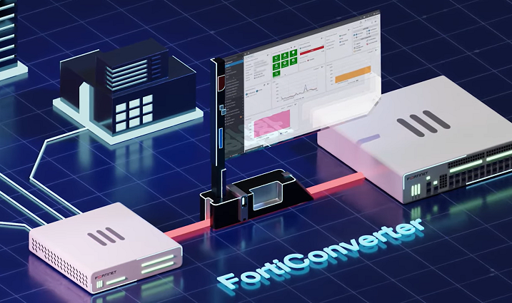
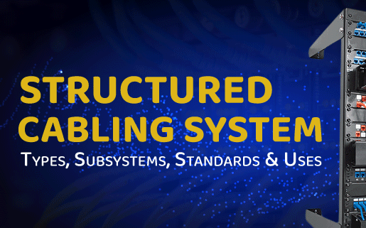

Here is a list of my hard skills:
- UiPath
- 1C
- CRM
- Jira,Asana
- Figma
- MINDBILL
Here is a list of my soft skills:
- 3 limbi vorbite: Româna, Engleza, Franceza
- Agile, SDLC
- Gândire analitica
- Multitasking
Projects
Am avut tangeta cu proiecte de tip SCN (Structured Cabling Network) in care am avut rolul de Junior Project Manager, constuind solutii optime alaturi de echipa cu produsele Cisco, Polycom, Taiden, pentru client de tip B2B.
Here are some of my projects:
| Fortinet Migration | Structured Cabling Network Cisco | Digital Rooms |
|---|---|---|
|  |  |
Contacte
Ma puteti gasi dupa contactele de mai jos:
Ana Paladi, 060096778
Chişinău, Moldova
paladi.ana.marin@gmail.com